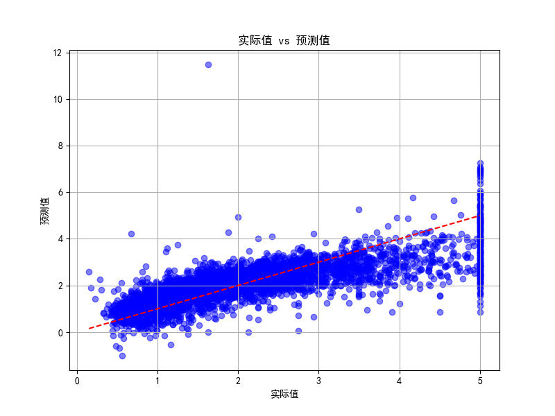
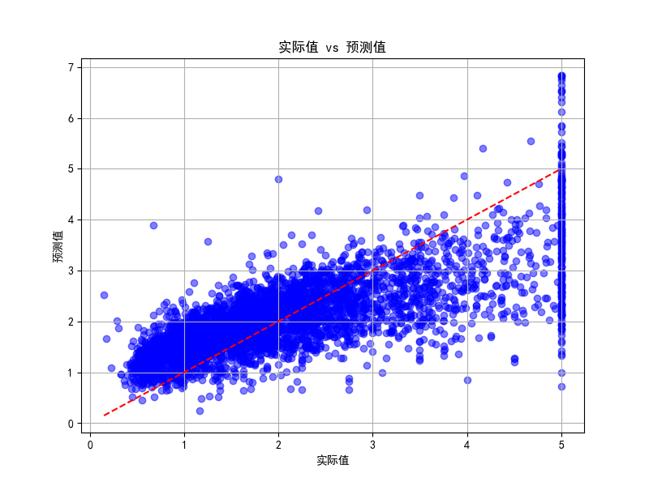
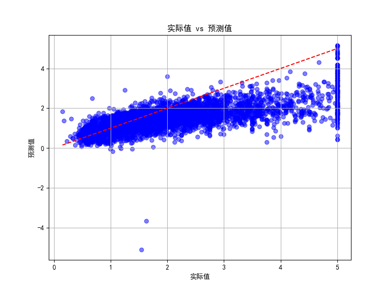
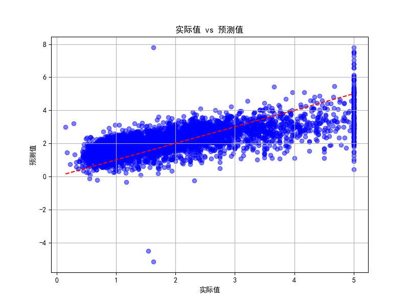
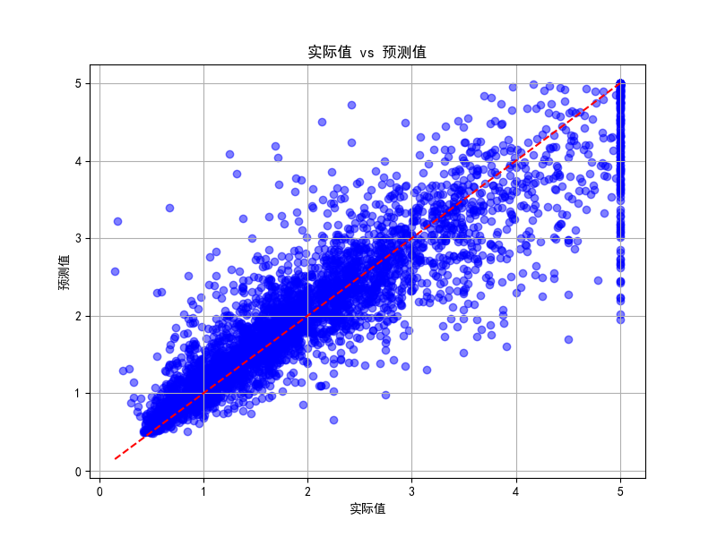

线性回归任务对比#
线性回归任务概述#
模型只有一组 输入特征X 和 一个 输出特征 Y
我们将数据集分成两份，一份是训练集，一份是测试集。
通过训练集输入给训练模型，训练模型形成其内部的参数，进行模型建立。
建立好模型后，通过输入测试集，观察 模型预测值 和 测试集实际值的对比来评估线性回归模型的回归质量。
数据预处理#
采用加利福尼亚州的房价数据进行预测：
california.data：这是一个二维数组（矩阵），包含了所有的特征数据。每一行表示一个样本，每一列表示一个特征。比如，加州的房屋特征可能包括房屋的面积、房龄、房间数、距离等。
california.target：这是一个一维数组，包含了与每个样本对应的目标值，通常是我们希望预测的值。在加州房价数据集中，目标是每个地区的房屋中位数价格（即目标变量）。
california = fetch_california_housing()
X = california.data # 特征
y = california.target # 目标变量
X_train, X_test, y_train, y_test = train_test_split(X, y, test_size=0.2, random_state=42)
X_train和y_train：训练集中的特征和目标变量。这部分数据用于训练模型，帮助模型学习输入和输出之间的关系。X_test和y_test：测试集中的特征和目标变量。这部分数据用于评估训练后的模型性能，确保模型在未知数据上的表现。
参数解释#
test_size=0.2：表示将数据集的 20% 用作测试集，剩余的 80% 用作训练集。这里0.2代表测试集的比例，通常选择 20% 或 30% 的数据作为测试集。random_state=42：是随机数种子，确保每次运行代码时，数据分割的方式是一致的。42是一个常用的固定种子值（也可以换成其他任意整数）。这样可以保证你在不同时间、不同环境下运行代码时，得到相同的训练集和测试集划分。
模型统一训练和测试#
# 训练模型
model.fit(X_train, y_train)
# 在测试集上进行预测
y_pred = model.predict(X_test)
# 评估模型
mse = mean_squared_error(y_test, y_pred)
r2 = r2_score(y_test, y_pred)
print(f"均方误差 (MSE): {mse}")
print(f"R² 分数: {r2}")
model变量由不同模型和参数建立而成，fit函数用于训练模型，将训练数据输入，在根据测试数据X_test来获得预测值集合，比较y_test和y_pred。
绘制效果图片#
# 绘制实际值 vs 预测值的散点图
plt.figure(figsize=(8, 6))
plt.scatter(y_test, y_pred, color='blue', alpha=0.5)
# 绘制理想线
plt.plot([y_test.min(), y_test.max()], [y_test.min(), y_test.max()], color='red', linestyle='--')
plt.xlabel('实际值')
plt.ylabel('预测值')
plt.title('实际值 vs 预测值')
plt.grid(True)
plt.show()
绘制以实际值为横轴，预测值为竖轴的图像，以进行可视化展示，展现评估结果。
测试函数#
总结以上步骤得出以下函数，通过输入模型就可以观察到回归结果
def linear_regression(model):
california = fetch_california_housing()
X = california.data # 特征
y = california.target # 目标变量
# 将数据集划分为训练集和测试集
X_train, X_test, y_train, y_test = train_test_split(X, y, test_size=0.2, random_state=42)
# 训练模型
model.fit(X_train, y_train)
# 在测试集上进行预测
y_pred = model.predict(X_test)
# 评估模型
mse = mean_squared_error(y_test, y_pred)
r2 = r2_score(y_test, y_pred)
# 打印结果
print(f"均方误差 (MSE): {mse}")
print(f"R² 分数: {r2}")
# 绘制实际值 vs 预测值的散点图
plt.figure(figsize=(8,6))
plt.scatter(y_test, y_pred, color='blue', alpha=0.5)
plt.plot([y_test.min(), y_test.max()], [y_test.min(), y_test.max()], color='red', linestyle='--') # 绘制理想线
plt.xlabel('实际值')
plt.ylabel('预测值')
plt.title('实际值 vs 预测值')
plt.grid(True)
plt.show()
线性回归与正则化#
线性回归是最简单的回归模型，它通过最小化目标函数（通常是均方误差）来拟合数据，没有正则化项，容易过拟合，尤其是当特征维度很高时。
岭回归是在线性回归的基础上加入了 L2 正则化，通过增加一个正则化项来避免模型过拟合。
套索回归是在 L1 正则化 基础上对线性回归进行优化，能够自动将某些特征的系数压缩为零，达到特征选择的效果。
model = LinearRegression()
ridge_model = Ridge(alpha=1.0) # 岭回归
lasso_model = Lasso(alpha=0.1) # 套索回归
参数解释#
alpha：是正则化强度的超参数，值越大，正则化效果越强
结果测试#
线性回归：
均方误差 (MSE): 0.5558915986952425 R² 分数: 0.5757877060324521
岭回归：

均方误差 (MSE): 0.5558034669932191 R² 分数: 0.575854961144014
套索回归：

均方误差 (MSE): 0.6135115198058131 R² 分数: 0.5318167610318159
支持向量机#
LinearSVR是线性支持向量回归的实现，适用于线性回归问题，它是 SVR（支持向量回归）的一种线性变体。它使用 坐标下降法 来求解优化问题，并且在处理大规模数据时通常比传统的 SVR(kernel='linear') 更快。
svr = LinearSVR(C=100, epsilon=0.1, max_iter=10000)
参数解释#
C：是一个正则化超参数，它决定了对训练误差的惩罚程度。
epsilon：控制了拟合的误差容忍度，也就是说，在回归模型中，允许多大的预测误差。
max_iter：模型训练时的最大迭代次数，如果模型在达到最大迭代次数之前没有收敛，训练将被中止。这是为了防止训练时间过长，尤其是在数据量较大时。增加 最大迭代次数 可以让模型有更多的机会找到最优解，但如果数据本身没有很好的线性关系，增加迭代次数可能不会带来太大改善。
tol：控制了模型在训练时收敛的精度，即模型的终止条件。它表示相邻两次迭代中目标函数的变化小于 tol 时，模型会认为已经收敛。
结果展示#

均方误差 (MSE): 1.020990749510713 R² 分数: 0.22086099342718446
神经网络#
是一个多层感知器（Multilayer Perceptron, MLP）回归模型，它通过前向传播和反向传播来训练神经网络，适用于非线性回归问题。
mlp_model = MLPRegressor(hidden_layer_sizes=(100,), max_iter=500, random_state=42)
参数解释#
hidden_layer_sizes：隐藏层大小，默认100。这个参数指定了神经网络的隐藏层的结构。它的值是一个元组，每个元素表示对应隐藏层中神经元的数量。多个隐藏层可以通过增加元组的长度来表示。本例只有一个层，例如(50, 50)就是有两个层。
max_iter：最大迭代次数，控制模型训练时的最大迭代次数。神经网络训练过程通常是基于 梯度下降 或其变种（如 Adam）进行的，训练过程会在一定的次数内优化权重和偏差。
random_state：设置一个种子值，用于初始化网络权重和进行随机数生成。它确保在每次训练时可以得到相同的结果，方便调试和复现实验结果。
结果展示#

均方误差 (MSE): 0.7128829809091106 R² 分数: 0.45598435851218855
随机森林#
rf_model = RandomForestRegressor(n_estimators=100, random_state=42)
参数解释#
n_estimators：参数控制随机森林中决策树的数量。更多的树通常能提高模型的性能，但也会增加计算成本。增加 n_estimators 可以提高模型的稳定性，减少单棵树的过拟合风险，但同时增加训练时间和内存消耗。
random_state：随机种子
max_depth：控制每棵树的最大深度。如果没有指定，树会一直扩展，直到叶节点只有一个样本或达到其他停止条件。限制树的深度可以防止过拟合，但也可能导致欠拟合。
结果展示#

均方误差 (MSE): 0.2553684927247781 R² 分数: 0.8051230593157366